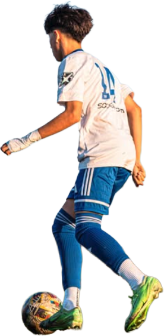

14
14
14
14
14
# 14 · 2026

Sam
Madril
.
01 — About
Fast. Fearless.
Focused.
Team
Albion Riverside
Age Group
2011 MLS Next
Position
Full-Back / Wing-Back
High School
North HS
GPA [0.00]
HS Coach
TBD
Contact
[email@example.com]
02 — Highlights
On the
Pitch.
Match highlights — Soccer
6 Clips
Highlight 01
Soccer
Highlight 02
Soccer
Highlight 03
Soccer
Highlight 04
Soccer
Highlight 05
Soccer
Highlight 06
Soccer